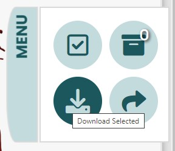

Documentation
Using the Models
The Vascular Model Repository is a library of cardiovascular models. Model projects can be downloaded in .zip format from the Repository. Each archive contains a project compatible with SimVascular, an open-source software for patient-specific cardiovascular modeling and simulation. We refer to the SimVascular website and Getting started page for an in-depth discussion of the software capabilities and its usage. In this documentation, we limit ourselves to recall that a SimVascular project can be opened by clicking File > Open SV Project... in the graphical user interface and by selecting the desired project folder.
Although the models are compatible with SimVascular by design, some components (in particular, image data and computational meshes) can be easily opened in other pieces of software too. Here is a brief description of the subfolders contained in each project:
Images: directory containing medical image data in .vti format, which can be opened, for example, using Paraview.
Paths: directory containing path files in *.pth format, where * is usually one of the vessels making up the current model. Path files store path points (in .xml format) manually identified during the centerline identification stage of SimVascular.
Segmentations: directory containing contour files in *.ctgr format, where * is usually one of the vessels making up the current model. Contour files store contour points (in .xml format) manually identified during the segmentation stage of SimVascular.
Models: directory containing the surface model of the geometry.
Meshes: directory containing the meshes of the model. Surface meshes are stored in .vtp, while volumetric meshes are stored in .msh and .vtu formats; .vtp and .vtu files can be opened, for example, using Paraview.
flow-files: directory containing inflow boundary conditions. These as stored in files called inflow_3d.flow, i.e., as raw text files in which each row corresponds to a particular timestep and flowrate value. Note that, in SimVascular, a positive inflow requires a negative sign (as the normal to the inlet surface and the velocity field have opposite orientations).
Simulations: directory containing simulation files compatible with SimVascular. Please note that simulation results are currently not included in the repository.
Using the Filters
Opening the filter menu
To open the filter menu, find the word "FILTERS" on the top left of the page and click on it.

About the filter menu
The Error Message
If what you are looking for is too specific, an error message may appear. If so, it means the specific models you are searching for are not currently avaliable on our repository. You may need to enter in fewer specifications into the filter for models to appear in the gallery.


In the example above, an error message has appeared. This is because the Vascular Model Repository does not currently contain models that are of pulmonary arteries that have undergone the coronary artery bypass graft procedure.
The Clear All Button
If you want to return to the default state of the dataset gallery, click on the Clear All button. It will clear all of the filters that are currently applied.


The Collapse All Button
If you want to collapse all the filter menus, click on the Collapse All Button. It will do so. Clicking this button, however, will not clear the filters that are applied.


In the example above, the collapse all button has been pressed, which collapses all the filter headers. The filters remain applied.
Looking at the different categories
The Search Bar
With the search bar, you are able to search for specific models. To search for multiple characteristics, add a space between each characteristic. To apply the filter, write in an entry and hit the ENTER key.


In the example above, the models that are a result of the search bar entry are all male models of aortas that have aneurysms.
If you are looking for one specific model, you can search for the name of the model in the search bar.
The Simulation Results Filter
We have ran simulations for some of the models in this repository. They come in .vtu and .vtp files.
This filter allows you to search for those models.

Above is what the default for the simulation results button is. In this state, no models are being filtered for simulation results.
To apply this filter, click on the mode you want to be in. If "MUST HAVE" is showing, you are filtering for the models that have simulation results. If "OPTIONAL" is showing, you are not filtering for simulation results.


In the example above, the models that are the result of clicking the simulation results button have downloadable .vtu and .vtp files.
The Age Filter
With the filter for age, you are able to search within an age range. The current minimum for the filter is 0 years of age, and the current maximum is 120 years.

Both the minimum and maximum bounds are inclusive. To apply the filter, hit the ENTER key.


In the example above, the models that are a result of the age filter entries are 5 years old.
The Drop-Down Menus
With the two drop down menus, you are able to search for models of a specific sex and species. To apply the filters, select the subcategory you are looking for.


In the example above, the models that are a result of the drop down menu entries are both female and human.
To deselect a drop down menu entry without clearing all applied filters, click on the "Select One" option.

Here is what the reset drop down menu should look like:

The Checkboxes
With checkboxes under the three categories "Anatomy," "Disease," and "Procedure," you are able to search for models of a specific anatomy, disease, or surgical procedure.
To apply the filters, click or unclick a checkbox.


In the example above, the models that are a result of the checkbox entries are of aortas.
Some models check off more than one box per category. However, selecting more than one option under a category will return the union of those entries. To search for models that specifically have 2+ entries under one category, you will find the search bar to be more helpful.
Between categories (such as "Anatomy" and "Disease"), the checkboxes act as an intersection of the entries.


In the example above, the models that are a result of the checkbox entries are either of aortas with aneurysm(s) or of coronary arteries with aneurysm(s).
The Project Must Contain Filter
A few models do not contain certain files. With the Project Must Contain filter, you are able to filter through the models that have the files you are looking to download.
Unlike the filter above, these checkboxes act as intersections. To apply the filters, click or unclick a checkbox.


In the example above, the models that are a result of the project must contain entries all contain both "Paths" and "Simulations" file.
Summary
There are different ways to find what you are searching for in the Vascular Model Repository. If you are looking for a specific model, the search bar is the most effective. If you are looking for models in specific categories, the other forms of filters will be the most helpful.
Using the Menu Bar
Opening the Menu Bar
To open the menu bar, click on the horizontal MENU bar on the top-middle right of the screen.
 After opening the menu bar, you will see four different icons, each with unique functions to help you navigate the Vascular Model Repository's dataset. The functions of each of these icons are described below.
After opening the menu bar, you will see four different icons, each with unique functions to help you navigate the Vascular Model Repository's dataset. The functions of each of these icons are described below.
The Select and Deselect All Icon

By clicking and unclicking this icon, you are able to select and deselect all of the models that are showing in the gallery.

In the example above, by clicking the Select All icon, all the models in the repository have been selected.
When you are viewing the models you have selected, a place you can access by clicking on the View Selected Models icon, clicking the Select All icon will deselect all the models you have selectd. A confirmation message will appear. By clicking "Yes," you are able to clear the models you have selected.

In the example above, one is viewing vertebral models they have selected.


The example above demonstrates the confirmation message that will appear if you click on the Select All icon when viewing the models you have selected.
The View Selected Models Icon
After selecting models, you may want to view all the models you have selected before downloading their files. To do so, find the view selected models icon, the top right icon, in the menu bar and click on it.
The number on the icon is how many models you have selected.


Once you click on this icon, you can unclick it or apply new filters to return to the gallery.
When you are viewing the models you have selected, you can see how many you have selected on the top-middle of the screen.


In the example above, one knows that they are viewing the four models they have selected.
In this page, by clicking the Select All icon, you can deselect all the models you have selected.
The Download All Icon
Once you are ready to download your models, click on the download icon in the menu bar.
Sharing Models
*description*
History
The Vascular Model Repository was originally created by Nathan Wilson and the Open Source Medical Software Corporation (OSMSC) under contract HHSN268201100035C with the National Institues of Health (NIH). The repository has then been migrated into its current form in a joint effort between the Cardiovascular Biomechanics Computation Lab at Stanford University, the Shadden Lab at Berkeley University, and Nathan Wilson. The project is currently supported by the NIH National Library of Medicine (grant 5R01LM013120).
References
We refer to the following publications for additional details on the Vascular Model Repository. If you find the repository useful, please consider citing these references.
N.M. Wilson, A.K. Ortiz, and A.B. Johnson, The Vascular Model Repository: A Public Resource of Medical Imaging Data and Blood Flow Simulation Results, J. Med. Devices 7(4), 040923 (Dec 05, 2013) doi:10.1115/1.4025983.
M.R. Pfaller, J. Pham, A. Verma, N.M. Wilson, D.W. Parker, W. Yang, and A.L. Marsden, Automated generation of 0D and 1D reduced-order models of patient-specific blood flow, arXiv:2111.04878.
Have Questions or Comments?
Let us know what functions you would like to see in the Vascular Model Respository by contacting us.